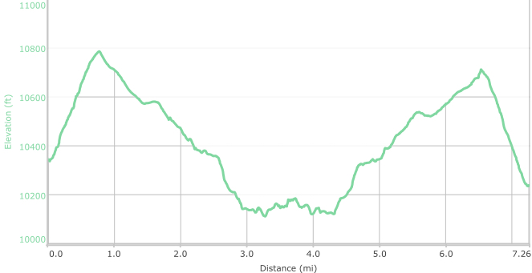

Hike New Mexico
w/ Tom & Ken
La Vega Trail
| Difficulty | Round-trip | Type | Elev. Chg. | Exposure | Wow Factor | Facilities | Seasons | Flickr | Get There |
|---|---|---|---|---|---|---|---|---|---|
| Medium | 7.3 miles | Out-and-back | 1450 ft | Fairly shady | Meadow | Parking Area | Not Winter | Album | Directions |



- Jun 14, 2016: Tom and Don head down the trail
- Jun 14, 2016: Cooling off in Nambe Creek
- Jun 14, 2016: An unexpected beautiful trail-side surprise
- Jun 14, 2016: A view towards heaven!
- Jun 14, 2016: A combo of sky, aspens, and false lupine
- Jun 14, 2016: False lupines decorate Mt Baldy
- Jun 14, 2016: Jack enjoys the expansive meadow
- https://www.flickr.com/photos/139088815@N08/27779007825/in/photostream/
- https://www.flickr.com/photos/139088815@N08/27168038873/in/photostream/
- https://www.flickr.com/photos/139088815@N08/27745238076/in/photostream/
- https://www.flickr.com/photos/139088815@N08/27678627442/in/photostream/
- https://www.flickr.com/photos/139088815@N08/27167268224/in/photostream/
- https://www.flickr.com/photos/139088815@N08/27167253554/in/photostream/
- https://www.flickr.com/photos/139088815@N08/27779027145/in/photostream/
La Vega, Spanish for "the meadow", is a beautiful setting in the basin of Mt. Baldy. The hike begins at the Santa Fe Ski area, and follows the Winsor Trail until, shortly after crossing Nambe Creek, the La Vaga Trail branches to the left. Along the shaded trail, after crossing the gate at the Pecos Wilderness Boundary, the predominant trees change from Douglas Fir to Aspens. At the right time of year, wildflowers adorn the path - from shooting stars, to lupine and even "fairly lily' orchids.